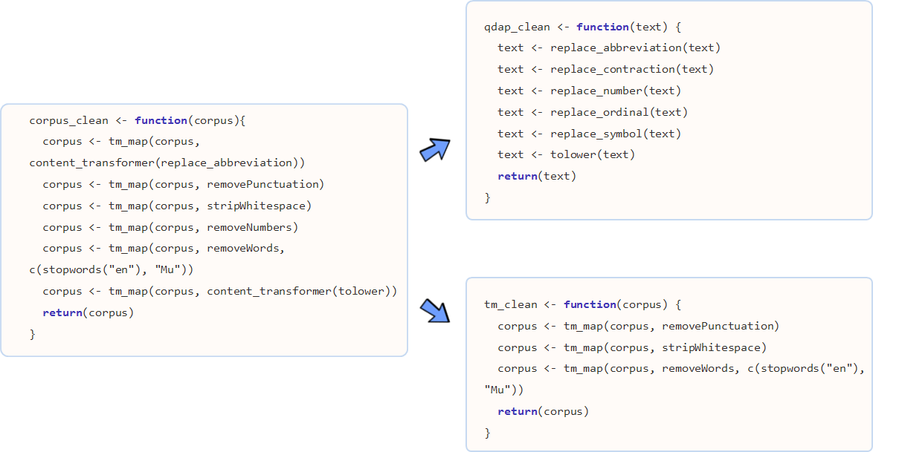

xwMOOC 기계학습
텍스트 데이터 전처리 – qdap
학습목표
- 텍스트 데이터 전처리 과정에 대해 이해한다.
qdap팩키지를 통해 다양한 전처리 과정을 이해한다.
1. qdap, tm 텍스트 자료구조 비교
텍스트 마이닝(Text Mining)을 위한 R의 대표적인 팩키지가 qdap tm 이다.
| 팩키지명 | 원 텍스트 | 단어 빈도수(word counts) |
|---|---|---|
| qdap | 데이터프레임(Dataframe) | 단어 빈도 행렬(Word Frequency Matrix) |
| tm | 말뭉치 (Corpus) | 단어 문서행렬(Term Document Matrix)/문서 단어행렬(Document Term Matrix) |
qdap은 원 텍스트 데이터를 데이터프레임 형태로 저장하는 반면에, tm 팩키지는 Corpus 말뭉치 형태로 원 텍스트 데이터를 저장한다는 점에서 차이가 난다.
두 팩키지 모두 공통으로 사용하는 단어/용어 빈도수에는 행렬(matrix)을 사용한다. 이를 그림을 표현하면 다음과 같다.

qdap텍스트 원문qdap_dat→qview(qdap_dat)tm텍스트 원문tm_dat→ inspect(tm_dat)qdap단어 빈도수qdap_wfm→ summary(qdap_wfm)tm단어 빈도수tm_tdm→ inspect(tm_tdm)
2. tm, qdap 데이터 정제 기능

단어 주머니 기법을 활용하여 텍스트를 분석할 때, 데이터 정제를 통해 단어를 합산하는데 큰 도움이 된다. 영어 단어 예를 들어, statistics, statistical, stats 등은 모두 통계라는 한 단어로 정리되면 좋다.
tm 팩키지 및 base 팩키지에 내장된 데이터 정제 기능은 다음과 같다.
- tolower():
base에 포함된 함수로 모든 문자를 소문자로 변환. - removePunctuation():
tm에 포함된 함수로 모든 구두점을 제거. - removeNumbers():
tm에 포함된 함수로 숫자를 제거 - stripWhitespace():
tm에 포함된 함수로 공백(whitespace)을 제거
qdap에는 좀더 다양한 텍스트 정제 함수가 지원된다.
- bracketX(): 괄호 내 모든 텍스트 제거
- “It’s (very) nice” → “It’s nice”
- replace_number(): 아라비아 숫자를 대응되는 영어문자로 변환
- “7” → “seven”)
- replace_abbreviation(): 축약어를 대응되는 전체 문자로 풀어냄
- “Jan” → “Janunary”)
- replace_contraction(): 단어 축약을 원래 상태로 되돌림
- “can’t” → “can not”)
- replace_symbol(): 일반 기호를 대응되는 단어로 교체
- “$” → “dollar”
텍스트가 너무 자주 출현하여 거의 정보를 제공하지 않는 단어를 불용어(stop words) 라고 부른다. tm 팩키지에는 영어기준으로 174개 불용어가 등재되어 있다. 또한, 관심있는 주제로 문서를 모았다면 수집된 거의 모든 문서에 특정 단어가 포함되어 있어 이것도 도움이 되지 않아 불용어에 등록하여 텍스트 분석을 수행한다.
removeWords(text, stopwords("english"))
stop_words_lst <- c("rstudio", "statistics", stopwords("english"))
removeWords(text, stop_words_lst)stopwords("english") 영어불용어 사전에 “rstudio”, “statistics” 단어를 더해서 불용어 사전을 완성하고 나서 removeWords() 함수로 새로 갱신된 사전에 맞춰 불용어를 정리한다.
참고문헌
- Tyler W. Rinker, qdap-tm Package Compatibility
- Basic Text Mining in R
- Hands-On Data Science with R Text Mining, Graham.Williams
- Statistics meets rhetoric: A text analysis of “I Have a Dream” in R
- How to Create WordCloud of Twitter Data using R Programming
- How to Clean the Twitter Data using R – Twitter Mining Tutorial